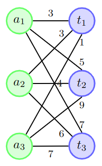
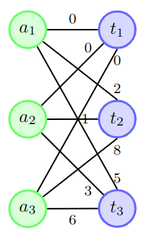
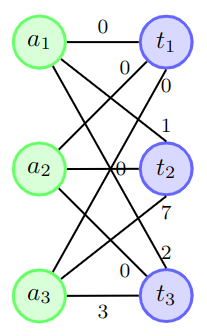
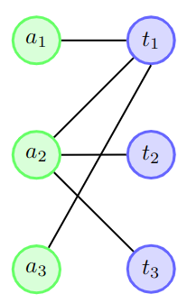
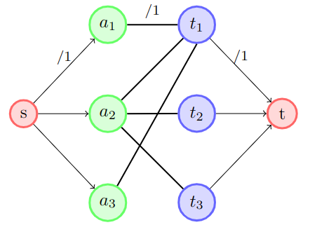
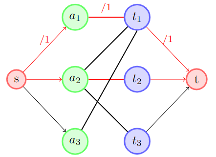
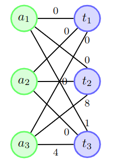
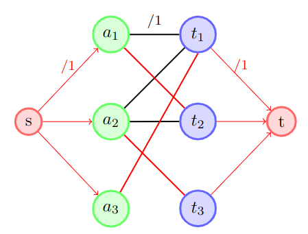

Graph Matching and the Assignment ProblemOverview of the Assignment ProblemThe assignment problem is a classical combinatorial problem where we are given a agents and t tasks to complete. Let's denote A as the set of agents and T as the set of tasks. Each possible pairing of an agent and task has an associated cost which we can describe as a mapping \(C: (A, T)\rightarrow \mathbb{R}\). Each agent can only complete one task and we need each task to be completed. The goal of the problem is to minimize the total cost to complete all of the tasks. We should note that if the number of agents is equal to the number of tasks, then we would refer to this as a balanced assignment problem (we will be working with this). If the number of agents is greater than the number of tasks, it would be an unbalanced assignment problem. We can turn an unbalanced assignment problem into a balanced assignment problem through creating "dummy" tasks where we just assign a cost of 0 for every agent. We dont need to consider the case where the number of tasks is greater than the number of agents as we would either need an agent complete more than one task or have unfulfied tasks.
An example where such a problem arises is in smart warehouses where
we could have multiple drones flying through a warehouse and we need to pick up a set of packages. The cost function could be the total distance the drone
has to travel to pick up then drop off a select package. So what we are trying to do is minimize the total distance the drones have to travel to pick up and
drop off all of the packages. We will see a sample problem relating to this later on. Formal Defintion of a Balanced Assignment ProblemLets give a mathematical defintion on what we are trying to do. From above, A is the set of agents, T is the set of tasks and C is the cost function \(C: (A, T)\rightarrow \mathbb{R}\). Our goal is to find a bijection \(P: A \rightarrow T\) such that we are minimizing: $$ \sum_{a \in A}^{} C(a, P(a))$$ *Note that a bijection in our case means that for every task \(t \in T\), there exists exactly one agent \(a \in A\) such that \(P(a) = t\) Representing our Bijection as a GraphLets try to represent all the possible pairings of our bijection as a graph:  We will represent every agent as a set of green nodes and every task as a set of blue nodes. We will represent a possible pairing between an agenet and a task through an edge. One of the first things that we will notice about our graph is that it is bipartite. A bipartite graph is a graph that the vertcies can be divided into two indepedent sets such that every edge has the two end points in different sets. In our case, the first set is all the agents (green verticies) the other set is all of the tasks (blue verticies). Then the weighted edges would represent the cost for an agent to complete a specific task. We call a graph a complete bipartite graph if every vertex connects to every other vertex that is a part of the opposite set. Graph Matching DefinitionsSuppose that we have a graph G = (V, E). Lets define a few keys terms that build upon each other:
 An example of a matching that is neither maximal or maximum-cardinality  An example of a matching that is maximal but not maximum-cardinality  An example of a matching that is maximum-cardinality (thus maximal as well) Minimum Cost Bipartite Matching Problem
Now lets look at a variation of the graph matching problem: Suppose that we have a weighted complete bipartite graph G = (V, E), such that V is split
into two equal groups A and T each of size n and we have a cost function \(C: E \in (A \times T) \rightarrow \mathbb{R}\) to represent the weights of
the edges. Our goal is to find the maximum-cardinality matching with the lowest total weight. Hungarian Algorithm
Although an intuitive way to go about solving this question is to just turn our graph into a network flow problem as such: Psuedocode
The following is the psuedocode for the Hungarian Method. It becomes much easier to understand if you run through it with the example in the next section. Running through an example with three nodes
Suppose we had the following graph and we wanted to find least cost maximum-cardinality matching:  Our initial step is for all \(a \in A\), we are going to take the weight of the smallest edge connected to vertex a and subtract that weight with every other edge connected to that vertex:
Now our graph will look like:
 We are likewise going to do this for all \(t \in T\) (starting from the graph above):
Now our graph will look like:  Now we are only going to consider the edges with a weight of 0 and try to make a maximal matching from it:  Lets convert this graph into a network flow but lets set all of the capacities to 1. When a capacity is set to 1, it means that we either use the edge or we dont as every edge must have integers weights. So when we end up trying to find the max-flow, that would equate to using as many edges as possible. However, since the edges going from the verticies in T to the sink also have a maximum capacity of 1, that prevents more than one edge having flow into each \(t \in T\):  After running the Ford-Fulkerson Algorithm, we should end up with the following flow:  We are going to denote \([a_1, a_2]\) as matched and \([a_3]\) as unmatched. Since our matching is not complete, we are going to have to move on to an addition step called the iterative step to see if we can make another matching. Looking back at the graph before the flow: Considering all the edges that are connected to our matched vertices \([a_1, a_2]\), we are going to find the smallest weight that is not 0 and denote that as d. Thus in our case, d = 1. Then we will run the following steps. Iterative Step: For each edge in our graph: if our edge is connected to a matched agent and the weight \(\neq\) 0: Subtract d from the weight of the edge else if our edge is connected to an unmatched agent and the weight \(\neq\) 0: Add d to the weight of the edge After the iterative step, we will end up with the following graph:  We are then again going to run the step where we only consider the edges with 0 weight and try to find a maximal matching through a network flow, The final network flow after that whole process is shown below:  Since all of the agents are matched, we can get our final solution through which edges have flow:
|